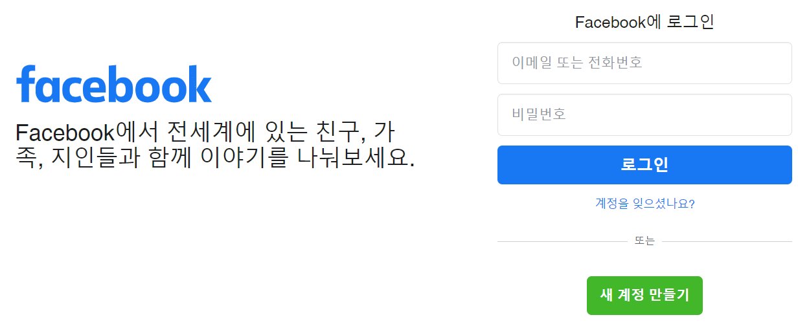

Facebook
Youtube
Instagram
Twitter
페이스북(Facebook)이란?

페이스북(Facebook)은 10억 명의 이용자가 가입한 세계 최대의 소셜네트워크서비스다. 하버드대학교의 학생이었던 마크 저커버그(Mark Zuckerburg)가 페이스매시(Facemash)라는 이름으로 학내에서 장난삼아 출발한 서비스가 이후 9년 만에 10억 명이 넘는 이용자가 가입한 세계 규모의 사이트로 성장했다. ‘좋아요(Like)' 버튼은 페이스북이 도입해 성공한 대표적인 소셜 플러그인이다.
페이스북 타임라인과 뉴스피드에는 자신이 올린 글뿐만 아니라 친구들의 동정이 실시간으로 게시된다. 페이스북에서는 자신과 친구로 맺어진 사람들의 반응과 정서, 감정을 '좋아요'와 답글을 통해 공유할 수 있다. 이것이 소셜네트워크서비스의 특성이 발현되는 지점이다. 페이스북 이용자들은 서로의 감정과 생각, 정서를 실시간으로 하이퍼링크한다. 그래서 어떤 정서나 의견이 전달되는 속도가 매우 빠르고 그 전달 범위 또한 매우 넓다.